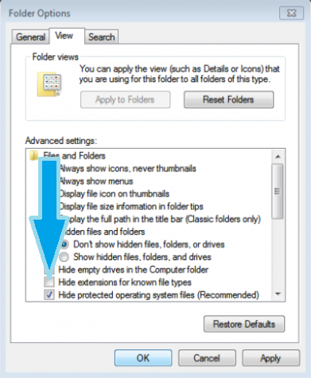
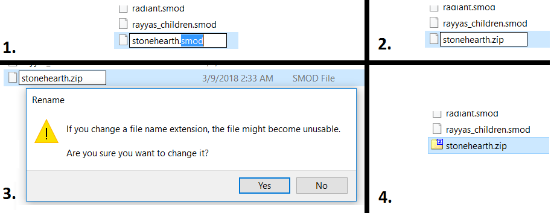
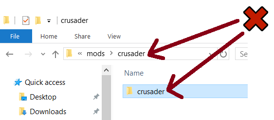
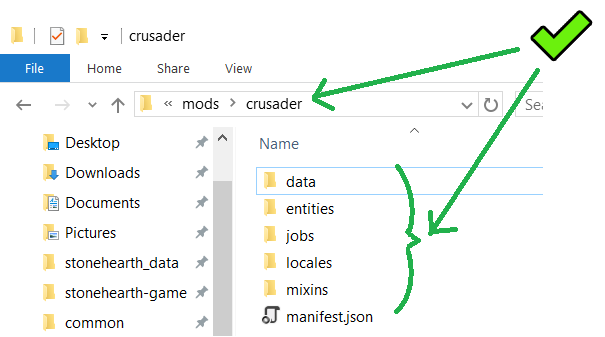
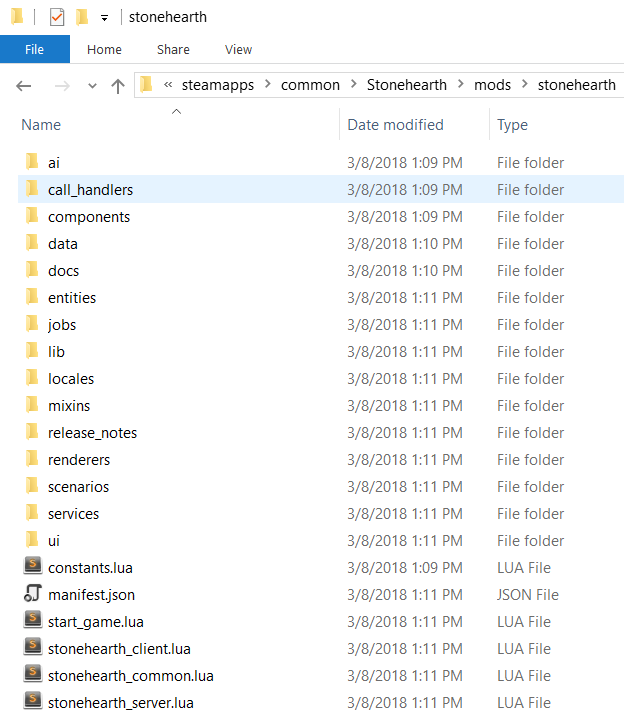

How mods are written today
First, a quick explanation of how modders were changing the game in the first alphas.[1]
The Stonehearth game content is stored in the "stonehearth.smod" file in your installation directory. This is just a renamed zip file. You can unzip it and get a peek at all the images, models, and data files within. To mod the game modders unzip the file, find a particular game asset, and overwrite it with their own version. This works, but it has lots of problems...
It requires changing files that the game installer owns. If you install a newer version of the game, it will blow away the changes that the mod has made. It's difficult to manage multiple mods that are all trying to overwrite different pieces of the Stonehearth mod. Multiple mods can't make changes to the same game object. They're both trying to overwrite the same file, and only one can win. So, here's our plan for addressing the current state of affairs.
Anatomy of a mod
A Stonehearth mod consists of:
- A directory with the mod files
- A manifest.json file in the directory describing the mod
A Stonehearth mod is just a file or directory that sits in the "mods" directory in your Stonehearth installation directory (mods from the Steam workshop reside on a different directory). If the game sees a directory or .smod file (which is just a renamed zip file of a directory!) it will try to load it as a mod when the game starts. If a file and directory have the same name (like /foo vs foo.smod), the game chooses to load the directory, not the smod file.
How to start modding
To start modding Stonehearth, first we want to know the structure of the Stonehearth mod itself. Let's go to the folder where Stonehearth is installed:
- If you installed it with the Humble Bundle installer, this will normally be at
C:\Program Files (x86)\Stonehearth. - If you have installed it via Steam, then the folder will be at
C:\Program Files (x86)\Steam\SteamApps\common\Stonehearth.
Inside of this folder, you will see a folder called mods. Open it, and you will see the main mods that shape the game.
They are always required to run the game, and you can get glitches and bugs if you mess directly with their files.
For easier modding, turn on the file extensions on the windows explorer.
For Windows 7, open the Control Panel and click on "Appearance and Personalization". Now, click on "File Explorer Options" (can also appear as "Folder Options"), and go to the "View" tab. In this tab, under Advance Settings, you will see the option "Hide extensions for known file types". Uncheck this option, then click "Apply" and "OK".
 For Windows 8/8.1/10, open any folder, select the "View" tab at the top, and check "File name extensions".

Now, select the stonehearth.smod file, and rename it so that the extension is .zip instead of .smod. 
Then, unzip the stonehearth.zip with the built-in Windows option (right-click the file, select "Extract here") or use any compression software of your liking (7-Zip, Winrar,etc). It might take a while to extract all the files.
Make sure that after uncompressing, you have a folder named stonehearth inside which there are the game files. Some methods for unzipping files might get the stonehearth folder inside another folder called stonehearth; in that case, cut it and paste it one level above, so that the contents get merged.
If the folder is not in that path, the game won't be able to start.
Example of extra inner folder for a mod, and how it should be:  
Let's take a peek at the contents of the stonehearth folder (you can leave the .zip file there, it won't cause any problems).
You should see something like this:

Down below the folders you will find some Lua files and the manifest.json, the core of the mod.
For easier referencing, most of the modders use the same folder structure than in the stonehearth mod, but it's not required. As you can see, the folder names are very descriptive, although sometimes it can be tricky to find what you're searching for if you're not sure of what it is (an entity? a component? a service?).
Most of the usual modding is done by copy-pasting files from the Stonehearth mod into your own mod, and modifying them.
So, leaving this folder unzipped while modding is useful, but remember to delete it when downloading new updates for the game, or you will get a conflict and possibly errors when starting a new game after the update.
Alternatively, you can copy the stonehearth.smod to another directory outside the mods folder, rename it, and unzip it for reference.
There are example mods released by the developers for new modders. You can download them and start tinkering with them without being overwhelmed by the huge amount of files that the stonehearth mod has. There's a section in this guide dedicated to them.
Final notes
You can use any game file as reference for your mod. Beware of unused content that might not be up-to-date or correctly set up for the latest version of the game.
References
[1]: From http://www.stonehearth.net/desktop-tuesday-a-peek-inside-the-modding-api/